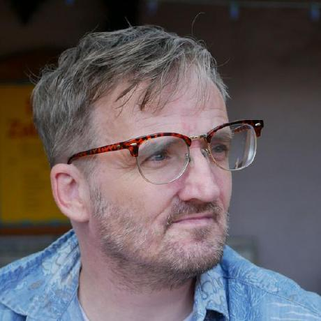
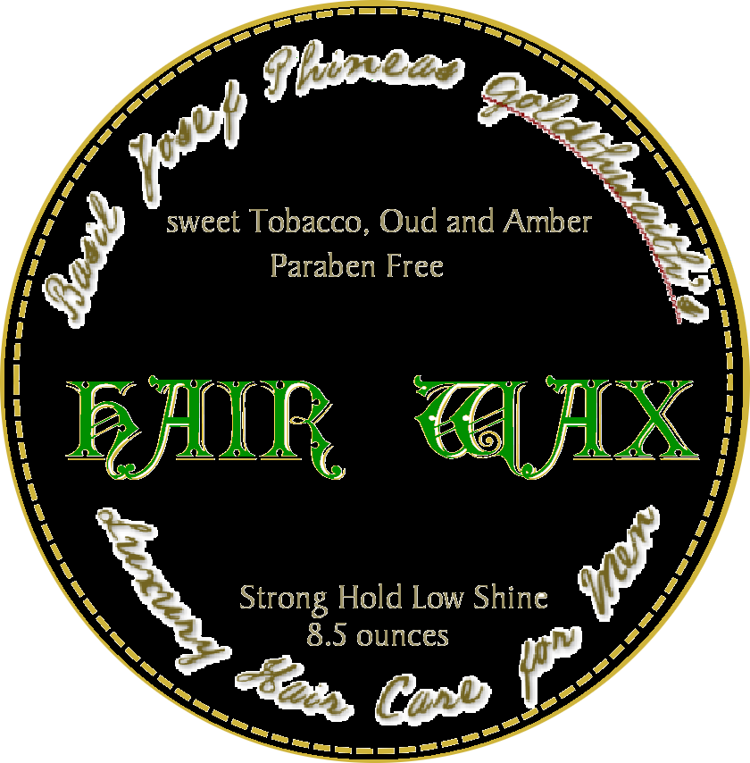
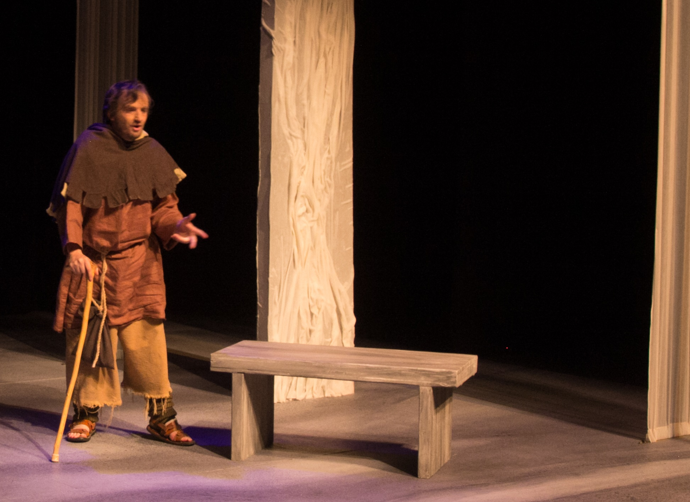

A "military brat" from birth, Josef grew up in 8 different countries and 5 states all the while being around punch cards and reel to reel computing. Over the course of his life has seen the world move from the Analog Age, through the Digital Age and finally into the Cyber Age. He has always had an interest in computers and computing learning Basic on the Commodore 64.
When not "geeking out" over computers, Josef maintained active involvement in the Boy Scouts of America and Equity USO touring shows. As such he received his first Union Card at the age of 9 and both the Arrow of Light. At the age of 15 and after 1897 performances over six different musicals, Josef retired from acting to finish the last few requirements for the Eagle Scout rank.
Josef started his first college courses at 16. His scouting career led him to an interest in being a first responder. He finished his EMT-B at 16 and paramedic a year later. He would have to wait four months before he would be old enough to legally practice. By the time of his his high school graduation he already had his first Associate of Applied Science Degree. His undergraduate days would see him shift gears into criminal forensics, properly called criminalistics, and Forensic Psychology. Time would see him receive a masters and eventual PhD in both fields. His career at graduation saw him move to the Federal Bureau of Prisons where he started as a medic. Over a two and a half decade career he would take opportunities to improve his skill set becoming a Crew Leader for an Inmate Wildland Fire Crew, Intake and assessment officer 1 and eventually administrative under-warden.
While an undergraduate at the University of Oklahoma Josef witnessed the birth and progress of the internet. Shortly after he began hobby coding HTML by parsing code off Netscape of his favorite Sites. He maintained an active interest in web-development following trends and updating his skill set as time would allow.
His career in public safety as a paramedic wildland firefighter and correctional officer eventually ended with a diagnosis of Multiple Sclerosis in 20013. Frustrated with boredom and lack of contribution to his community, Josef decided to pursue a career in full stack development.
Former Audio podcast that was home to the Brother Kings and Philo and Scot.
Preview and Proof of concept site for 1/2 special interest show for Youtube called The Gentleman's Cup of Tea. A Show about culture, etiquette, grooming and masculinity without the toxicity
Basil's Tonsorial EmporiumA forthcoming small business selling bespoke grooming and hygiene products with an Edwardian Flare and sister venture with The Gentlemans Cup of Tea.
Personal Acting Resume of Josef P Melech, known on stage as Josef Steven Fisher.